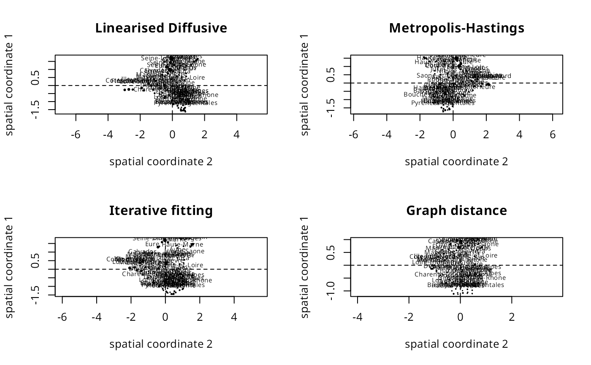
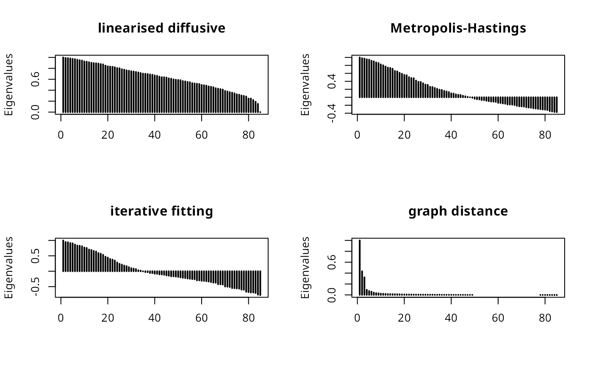

Weighted Multivariate Spatial Autocorrelation Measures
spatialdelta.RdThe kernel-based weighted multivariate spatial autocorrelation measure delta proposed in Bavaud (2024) is implemented, together with support functions to create spatial weights matrices from symmetric binary adjacency matrices; summary and display methods are provided.
Usage
spatialdelta(dissimilarity_matrix, adjusted_spatial_weights,
regional_weights=NULL, alternative = "greater")
# S3 method for class 'spatialdelta'
summary(object, ...)
# S3 method for class 'summary.spatialdelta'
print(x, digits=getOption("digits"), ...)
linearised_diffusive_weights(adjacency_matrix, regional_weights, t_choice = 2)
metropolis_hastings_weights(adjacency_matrix, regional_weights)
iterative_proportional_fitting_weights(adjacency_matrix, regional_weights,
g=0.001, iter=1000, tol=1e-10, tol.margins=1e-10, print=FALSE)
graph_distance_weights(adjacency_matrix, regional_weights, c=NULL)
# S3 method for class 'adjusted_spatial_weights'
as.matrix(x, ...)
plot_spatialcoords(x, ...)
# Default S3 method
plot_spatialcoords(x, ...)
# S3 method for class 'spatialdelta'
plot_spatialcoords(x, cols = c(1L, 2L),
mult = c(1, 1), power = 1L, fmult = NULL, names = attr(x, "rnames"), bg = 1,
pos = 3, cex = 0.6, largest = NULL, ...)
plot_moran(x, y, ...)
# Default S3 method
plot_moran(x, y, ...)
# S3 method for class 'spatialdelta'
plot_moran(x, y, fmult = NULL, names = attr(x, "rnames"),
bg = 1, pos = 3, cex = 0.6, largest = NULL, ...)
plot_spatialscree(x, ...)
# Default S3 method
plot_spatialscree(x, ...)
# S3 method for class 'spatialdelta'
plot_spatialscree(x, lwd=2, ...)
factorial_coordinates(x)
# Default S3 method
factorial_coordinates(x)
# S3 method for class 'spatialdelta'
factorial_coordinates(x)
plot_factorialcoords(x, ...)
# Default S3 method
plot_factorialcoords(x, ...)
# S3 method for class 'spatialdelta'
plot_factorialcoords(x, cols = c(1L, 2L),
mult = c(1, 1), fmult = NULL, names = attr(x, "rnames"), bg = 1, pos = 3,
cex = 0.6, largest = NULL, ...)
plot_factorialscree(x, ...)
# Default S3 method
plot_factorialscree(x, ...)
# S3 method for class 'spatialdelta'
plot_factorialscree(x, ...)
localdelta(x, ...)
# Default S3 method
localdelta(x, ...)
# S3 method for class 'spatialdelta'
localdelta(x, names = attr(x, "rnames"), ...)
cornish_fisher(x, ...)
# Default S3 method
cornish_fisher(x, ...)
# S3 method for class 'spatialdelta'
cornish_fisher(x, ...)Arguments
- dissimilarity_matrix
dissimilarity_matrixis a square matrix of dissimilarities between (possibly multivariate) observations- adjusted_spatial_weights
adjusted_spatial_weightsis a square matrix of spatial weights as returned by construction functionslinearised_diffusive_weights,metropolis_hastings_weights,iterative_proportional_fitting_weights,graph_distance_weightsor similar; only the named construction functions pass regional_weights through tospatialdelta, so for matrices constructed in other ways, this argument is required- regional_weights
default NULL,
regional_weightsare weights reflecting the contribution of each observation to the (possibly multivariate) data set, they may be uniform, but none can be zero, and they must sum to unity; ifadjusted_spatial_weightsis an"adjusted_spatial_weights"object created bylinearised_diffusive_weights,metropolis_hastings_weights,iterative_proportional_fitting_weightsorgraph_distance_weights,regional_weightsis passed as an attribute- alternative
a character string specifying the alternative hypothesis, must be one of "greater" (default), "less" or "two.sided"
- object, x
object,xare objects returned byspatialdeltaof class"spatialdelta", or of class"adjusted_spatial_weights"- digits
default
getOption("digits"), or a non-null value specifying the minimum number of significant digits to be printed in values- adjacency_matrix
adjacency_matrixis a symmetric binary adjacency matrix- t_choice
default 2, the inverse of the largest eigenvalue of the adjusted Laplacian adjacency matrix (t2, Bavaud 2024, page 583), otherwise 1 (t1, page 579)
- g
default 0.001, (Bavaud 2024, page 579, 589), a small quantity to lift binary adjacency matrix above zero
- iter, tol, tol.margins, print
arguments passed to
Ipfp- c
default NULL, a coefficient greater than zero and less than or equal to -1/min(B) where B is the matrix of scalar products associated with the distance matrix; if not given, -1/min(B) is used
- y
a numeric vector from which to create a Moran plot
- cols
integer vector of length 2, default
c(1L, 2L), giving the two columns of the regional or factorial coordinates to plot- mult
numeric vector of length 2, default
c(1, 1), to scale or reverse axes as signs are not given to be the same for different eigenproblem implementations- power
integer vector of length 1, default 1; if higher, use a powered kernel
- fmult
default
NULLfor automatic scaling of the circle symbols expressing the observation weightsfin the plot as(0.02*diff(range(X)))/diff(range(regional_weights))whereXis the first vector of coordinates; may be set manually to a numeric value- names
default
attr(x, "rnames"), the coordinates will be annotated with these strings passed through from the"region.id"attribute of the"nb"object used to create theadjusted_spatial_weightsmatrix from the"adjacency_matrix"object as row and column names- bg, pos, cex, lwd
arguments passed to graphics functions or methods
- largest
default NULL, may be integer > 0 and <= the region count, permitting names to be plotted only for the
largestcircle symbols- ...
other arguments passed to other functions or methods
Details
In general, the user should choose one of the functions for constructing spatial weights from the symmetric binary, or similar to symmetric - for example row-standardised - adjacency matrix. The cornish_fisher method updates the standard deviate and p-value if the pair of skewness and excess kurtosis estimates are within the required domain.
Value
spatialdelta returns an object with classes "spatialdelta" and "htest". Its print method treats it as an "htest" object. Other methods use additional attributes:
- Kx
Multivariate kernel matrix eq. 16
- Kw
Spatial weights kernel matrix eq. 21
- regional_weights
Input observation weights
- adjusted_spatial_weights
Input spatial adjusted_spatial_weightseights
- B
symmetric matrix of scalar products eq. 15
- VI
Spatial component of delta variance
- Vx
Multivariate component of delta variance
- Vd0
Variance of delta calculated in another way eq. 38
- alphamu
Spatial component of delta skewness
- alphalambda
Multivariate component of delta skewness
- gammamu
Spatial component of delta excess kurtosis
- gammalambda
Multivariate component of delta excess kurtosis
- rnames
Region names passed through from row/column names of
adjusted_spatial_weights, from the"region.id"attribute of the"nb"object used to create theadjusted_spatial_weightsmatrix from the"adjacency_matrix"object
linearised_diffusive_weights, metropolis_hastings_weights, iterative_proportional_fitting_weights and graph_distance_weights return square spatial weights matrices (the latter two return matrices created by metropolis_hastings_weights if igraph or mipfp are not available); factorial_coordinates returns a square factorial matrix; localdelta returns a vector of local deltas eq. 30.
References
Bavaud, F. (2024), Measuring and Testing Multivariate Spatial Autocorrelation in a Weighted Setting: A Kernel Approach. Geographical Analysis, 56: 573-599. doi:10.1111/gean.12390 ; Bivand, R. (2025) Implementing a weighted measure of multivariate spatial autocorrelation, Cahiers Du Centre De Linguistique Et Des Sciences Du Langage, (69), 19-35, doi:10.26034/la.cdclsl.2025.8343
Author
Roger Bivand, Roger.Bivand@nhh.no
Note
The input adjacency matrix should be symmetric, and not have sub-graphs or islands - it should be possible to step across graph edges from any observation to any other.
Examples
toy_f <- c(0.4, 0.1, 0.3, 0.2)
toy_xa <- c(4, 9, 1, 1)
toy_nba <- structure(list(c(2L, 3L, 4L), c(1L), c(1L, 4L), c(1L, 3L)),
class="nb", region.id=as.character(1:4))
toy_gla <- list(c(0.25, 0.5, 0.25), c(1), c(2/3, 1/3), c(0.5, 0.5))
toy_wa <- nb2mat(toy_nba, glist=toy_gla, style="W")
spatialdelta(dissimilarity_matrix=as.matrix(dist(toy_xa))^2,
adjusted_spatial_weights=toy_wa, regional_weights=toy_f, alternative="two.sided")
#>
#> Bavaud delta normal approximation
#>
#> data: as.matrix(dist(toy_xa))^2
#> weights: toy_wa
#> Standard deviate = 1.9799, p-value = 0.04771
#> alternative hypothesis: two.sided
#> sample estimates:
#> delta Expectation Variance Skewness Excess Kurtosis
#> 0.13333333 -0.33333333 0.05555556 0.16162441 Inf
#>
toy_xb <- toy_xa
toy_glb <- list(c(0.5, 0.125, 0.25, 0.125), c(0.5, 0.5), c(1/3, 0.5, 1/6), c(0.25, 0.25, 0.5))
toy_nbb <- include.self(toy_nba)
toy_wb <- nb2mat(toy_nbb, glist=toy_glb, style="W")
spatialdelta(dissimilarity_matrix=as.matrix(dist(toy_xb))^2,
adjusted_spatial_weights=toy_wb, regional_weights=toy_f, alternative="two.sided")
#>
#> Bavaud delta normal approximation
#>
#> data: as.matrix(dist(toy_xb))^2
#> weights: toy_wb
#> Standard deviate = 1.9799, p-value = 0.04771
#> alternative hypothesis: two.sided
#> sample estimates:
#> delta Expectation Variance Skewness Excess Kurtosis
#> 0.56666667 0.33333333 0.01388889 0.16162441 Inf
#>
toy_xc <- c(3, 3, 1, 1)
toy_nbc <- structure(list(c(3L, 4L), c(3L, 4L), c(1L, 2L), c(1L, 2L)),
class="nb", region.id=as.character(1:4))
toy_glc <- list(c(0.6, 0.4), c(0.6, 0.4), c(0.8, 0.2), c(0.8, 0.2))
toy_wc <- nb2mat(toy_nbc, glist=toy_glc, style="W")
spatialdelta(dissimilarity_matrix=as.matrix(dist(toy_xc))^2,
adjusted_spatial_weights=toy_wc, regional_weights=toy_f, alternative="two.sided")
#>
#> Bavaud delta normal approximation
#>
#> data: as.matrix(dist(toy_xc))^2
#> weights: toy_wc
#> Standard deviate = -2.2361, p-value = 0.02535
#> alternative hypothesis: two.sided
#> sample estimates:
#> delta Expectation Variance Skewness Excess Kurtosis
#> -1.00000000 -0.33333333 0.08888889 -0.63887656 Inf
#>
# \donttest{
if (require(Guerry, quietly=TRUE)) {
data(gfrance85)
gfrance85 <- st_as_sf(gfrance85)
moral <- scale(st_drop_geometry(gfrance85)[, 7:12])
Dmoral <- as.matrix(dist(moral))^2
fG <- gfrance85$Pop1831/sum(gfrance85$Pop1831)
gnb <- poly2nb(gfrance85, row.names=gfrance85$Department)
frG <- nb2mat(gnb, style="B")
ldwG <- linearised_diffusive_weights(adjacency_matrix=frG, regional_weights=fG)
mhwG <- metropolis_hastings_weights(adjacency_matrix=frG, regional_weights=fG)
ifwG <- iterative_proportional_fitting_weights(adjacency_matrix=frG, regional_weights=fG)
gdwG <- graph_distance_weights(adjacency_matrix=frG, regional_weights=fG)
(moral_ldw <- spatialdelta(dissimilarity_matrix=Dmoral, adjusted_spatial_weights=ldwG))
(cornish_fisher(moral_ldw))
moral_mhw <- spatialdelta(dissimilarity_matrix=Dmoral, adjusted_spatial_weights=mhwG)
moral_ifw <- spatialdelta(dissimilarity_matrix=Dmoral, adjusted_spatial_weights=ifwG)
moral_gdw <- spatialdelta(dissimilarity_matrix=Dmoral, adjusted_spatial_weights=gdwG)
opar <- par(mfrow=c(2, 2))
plot_spatialcoords(moral_ldw, cols=c(2,1), mult=c(-1, -1), main="Linearised Diffusive", asp=1)
plot_spatialcoords(moral_mhw, cols=c(2,1), mult=c(1, 1), main="Metropolis-Hastings", asp=1)
plot_spatialcoords(moral_ifw, cols=c(2,1), mult=c(1, 1), main="Iterative fitting", asp=1)
plot_spatialcoords(moral_gdw, cols=c(2,1), mult=c(1, 1), main="Graph distance", asp=1)
par(opar)
opar <- par(mfrow=c(2, 2))
plot_spatialscree(moral_ldw, main="linearised diffusive")
plot_spatialscree(moral_mhw, main="Metropolis-Hastings")
plot_spatialscree(moral_ifw, main="iterative fitting")
plot_spatialscree(moral_gdw, main="graph distance")
par(opar)
Crime_pers <- scale(gfrance85$Crime_pers)
funif <- rep(1/length(Crime_pers), length(Crime_pers))
lw <- nb2listw(gnb, style="W")
Crime_pers_delta <- spatialdelta(dissimilarity_matrix=as.matrix(dist(Crime_pers))^2,
adjusted_spatial_weights=listw2mat(lw), regional_weights=funif)
Crime_pers_delta$estimate["delta"]
locdelta <- localdelta(Crime_pers_delta)
moran.test(Crime_pers, lw, randomisation=FALSE)$estimate["Moran I statistic"]
locmoran <- localmoran(c(Crime_pers), lw)[,1]
all.equal(locmoran, locdelta)
all.equal(unname(moral_ldw$estimate["delta"]), # Eq. 30 p. 588
sum(fG * localdelta(moral_ldw)))
all.equal(unname(moral_mhw$estimate["delta"]), # Eq. 30 p. 588
sum(fG * localdelta(moral_mhw)))
all.equal(unname(moral_ifw$estimate["delta"]), # Eq. 30 p. 588
sum(fG * localdelta(moral_ifw)))
all.equal(unname(moral_gdw$estimate["delta"]), # Eq. 30 p. 588
sum(fG * localdelta(moral_gdw)))
}


#> [1] TRUE
# }